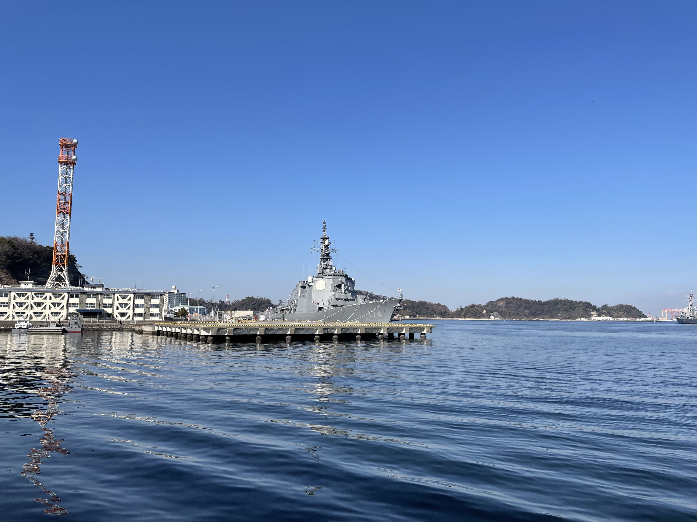
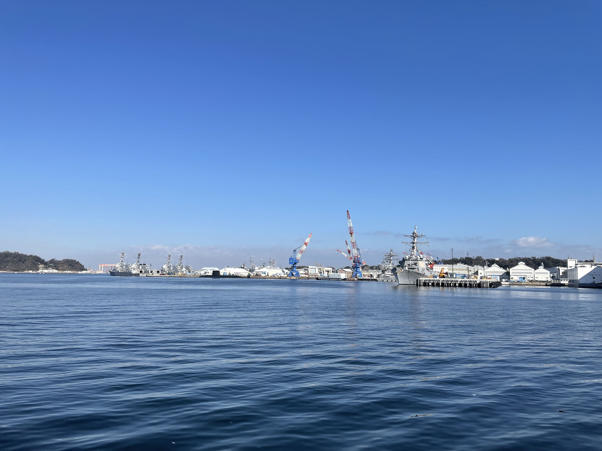
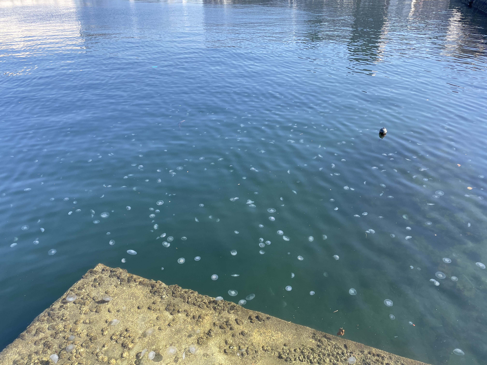
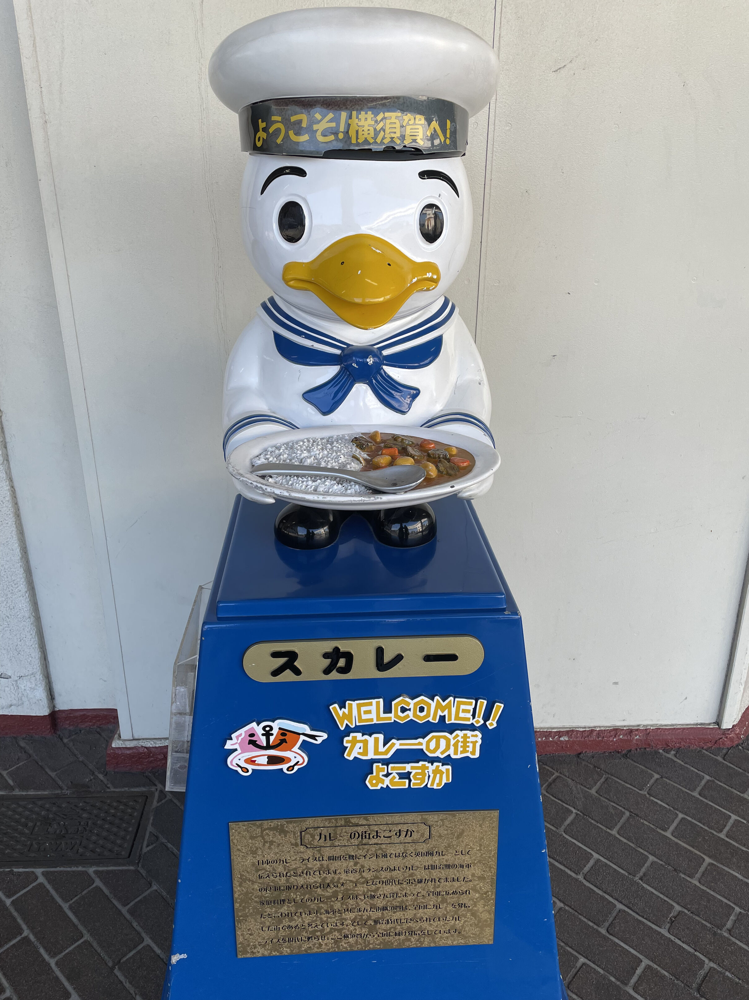
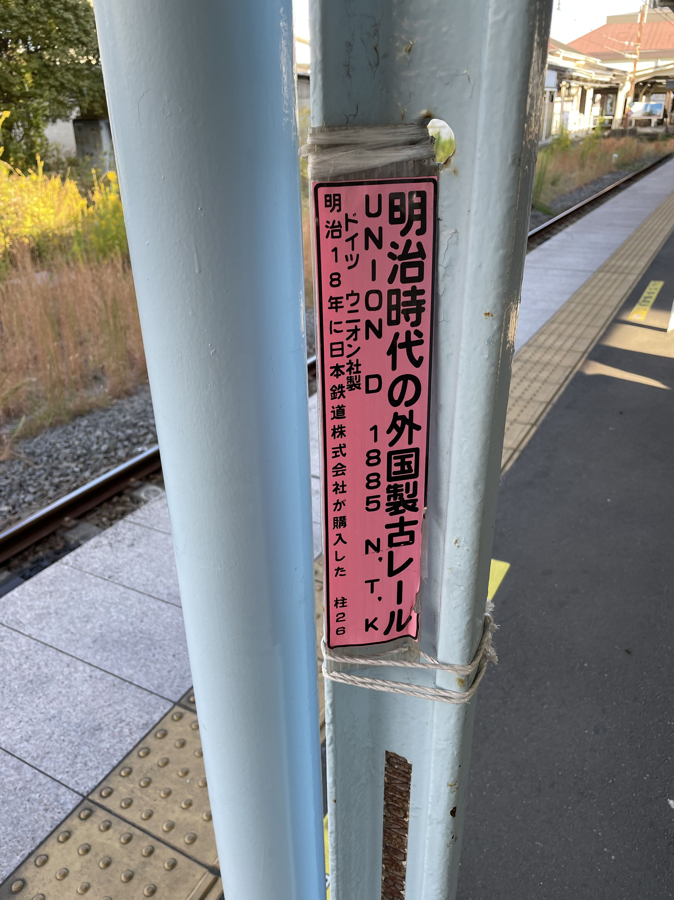
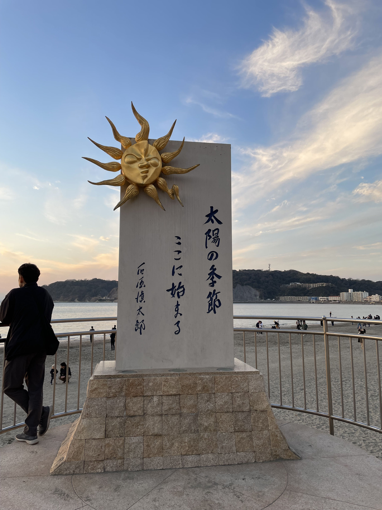
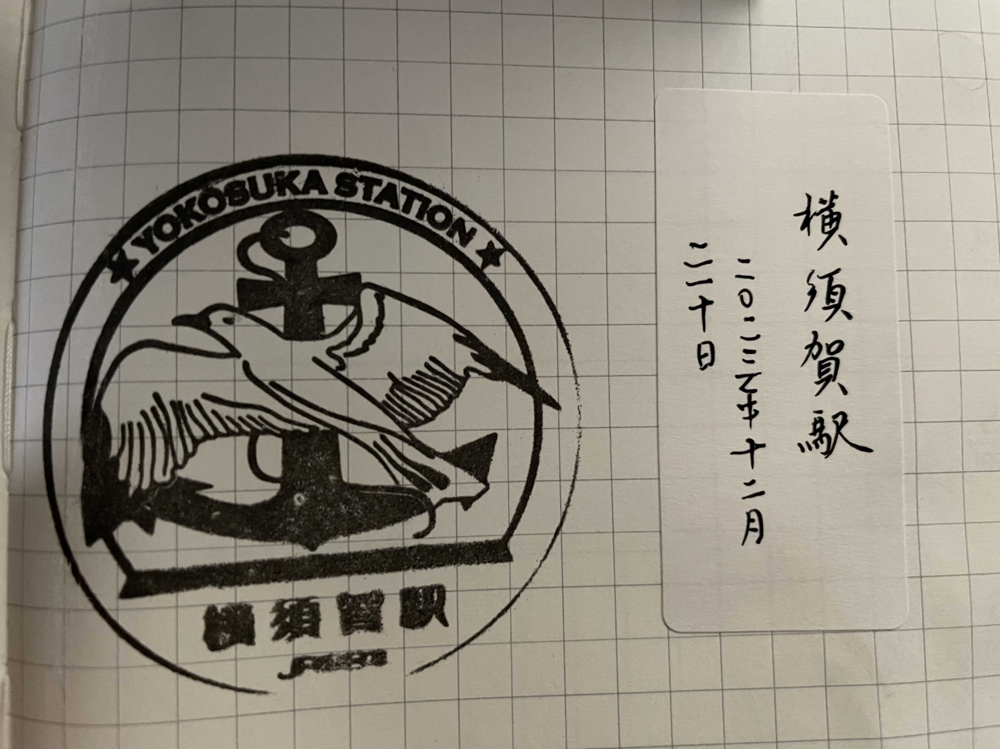
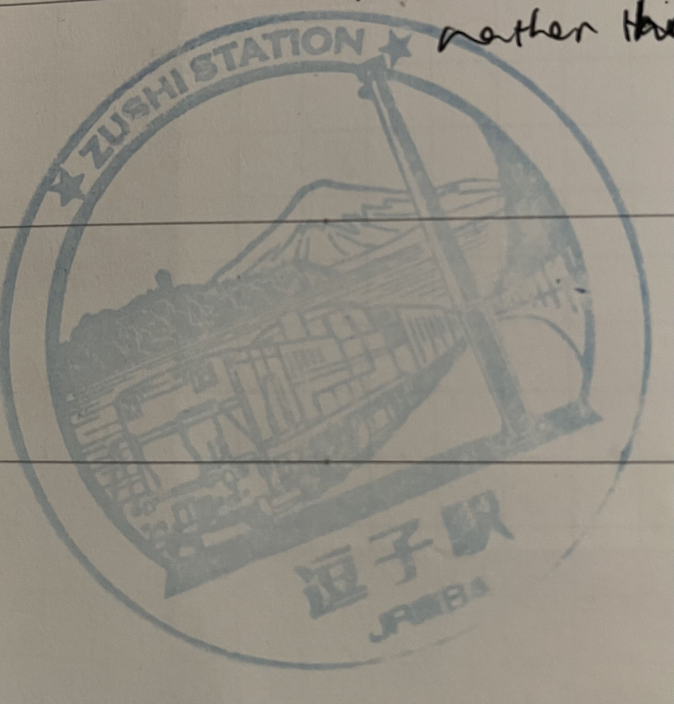

横须贺，逗子日归旅游笔记
和很多常来日本旅游行踪遍布整个岛屿的人不一样，我是一个非常不热衷旅行的人，我在日本总计已经快四年了，迄今唯一一次出东京圈的经验是去过两次河口湖，而且都是当日往返。我没有什么特别讨厌旅行的原因，但当我拥有一台MacBook和 Retina屏幕之后，我发现我更加没有旅行的理由了，那么多高分辨率和高帧率的视频完全可以带给你优美的风景，你不需要去面对不确定的风险，汽油的臭味，昂贵的账单和肮脏的厕所。与此同时，大多数风景优美的地方都在农村和县城，而我在农村和县城待了几十年了，我太懂它们是什么样子了，加上我没有车，所以我敬而远之。
但每次假期超过三天，我就心想，出去走走吧，即便是一都三县，我还有好多没有去过但是想去的地方，比如千叶的馆山，南房总，銚子等等，有些地方我在六七年前读书的时候就在想什么时候去看看，结果竟然一直没有动身（事实上到现在还没有）。
横須賀
最近我和妻子多了一个新的爱好，就是收集JR的印章。日本的许多车站，为了吸引游客，都有自己的专属印章。据我所知，东京地铁仅有电子的印章，你需要在站内找到贴着QR码的海报，扫码收集，我对此兴趣缺缺。但是JR的车站几乎都有实体的印章，这让我有了全新的四处去转转的动机。于是，我在地图上画了一个圈，我决定花一天的时间去横须贺看看。
众所周知，横须贺拥有美军海军基地，是第七舰队的驻点之一，罗纳德里根号航母就长驻于此[1]。当然我不是一个军事迷，这是我Google出来的内容。但我是一个阴阳怪气的人，我想要拍摄一个星条旗飘扬在军舰上的画面，配上突如其来的「Start Spangled Banner」音乐做成一个短视频。
但这事实上并不可行，作为游客，最好的军舰观赏地点是Verny Park（ヴェルニー公園）。Léonce Verny 是当时日本政府人才引进帮助建设兵工厂的一位法国工程师[2]，这座中心摆放着一架钢琴的法式公园就是以他的名字命名的。但即便是这里，离军舰还有相当的距离，我孱弱的搭载1200万像素f/1.6孔径镜头的iPhone 12 mini[3]实际上根本没办法清楚地拍摄到远处的星条旗和US NAVY字样。但湛蓝的天空，平静的海水，让我脑海中浮现了四个字：碧蓝航线。


风景不错，而且不知道为什么，海岸边还有非常多水母。这是我第一次在现实中见到水母🪼，它们在水中聚集的样子和我以前在电视里看到得一模一样。我很好奇为什么唯独在这个海岸可以看到这么多水母，但别的地方，比如横滨的海岸，台场的海岸就并没有。我的猜想是这里的海因为流动性比较小，因此比较肮脏，给水母提供了足够的赖以生存的营养。

当然最后也没有忘记吃海军咖喱，这里据说是日本咖喱的滥觞之地，靠近车站就有一个海军鸭子手捧咖喱提醒你这一点，但其实周围就是浓浓的咖喱味，你不可能忘了这一点。除此之外，据说横须贺有三宝，咖喱汉堡起司糕，分量都相当惊人，我在最近的商场里看到了同时贩卖这三样食物的套餐，于是我买了一份和我妻子一起分享。没什么特别的味道，突出一个量大。

逗子
乘坐横须贺线，十几分钟就可以抵达另一处观光点逗子海岸。我不是很熟悉但我觉得我仿佛听说过，抱着来都来了的心态我们去了逗子海岸。
发车间隔还挺久，在此期间，我在车站内四处晃悠，发现车站的钢框架乃是百年前的产物。上面是说明治18年（1885年）购自德国UNION公司（具体已经不可考）的轨条。事实上不止这里，网上有很多关于相关古老轨条用于车站结构的介绍， 比如：https://hamarepo.com/story.php?page_no=1&story_id=5002

在我看来，逗子就是一个袖珍版的镰仓，在这里你能看到的一切风景你在镰仓几乎都可以看到。但对于居住在这里的人来说，我相信他们非常喜欢自己家旁边就有可以冲浪的海岸。我走过重重neighborhood，他们几乎每家都摆放着冲浪板，看起来非常大，我还看到一个刚刚冲完的人正在用水冲洗他的冲浪板，我不知道那么大一个东西要怎么搬去海边。这些冲浪的人每个人都晒着黝黑的皮肤，让我想起在镰仓见到的在公路上骑着摩托车的亡命之徒们，他们的眼神让我觉得他们似乎从来没有上过班，或者以前上过，但以后再也不需要上班了。
我坐在旁边一个咖啡店的外面喝咖啡（我妻子认为他们家的Latte是速溶的，而我的热美式喝不出来，因为对我来说都是一个味道），从那里，可以眺望远方若隐若现的江之岛以及更加若隐若现的富士山，如果我拥有一台正儿八经的相机的话，应该可以拍下这美丽的场景。
我们在落日余晖之际返回，沙滩上多了一些生火烧烤的家庭们，我想那些柴火的木屑如果掉在沙子里，赤脚走上去的话说不定会有够疼的。另外还有一些人打起了沙滩棒球，看起来很有意思，球棒和球都是塑料的。我这才注意到，那里还耸立着一个石碑，老熟人了，知名右翼作家前东京都知事石原慎太郎的「太阳的季节，从这里开始」。我并没有看过这本书，我猜想可能这里是故事发生的舞台。如果在这里驻足的话，你会发现地上每一块石板都有赞助，商业化做得不错。

印章
横须贺站和逗子站的印章都非常别致。
横须贺站的印章是非常少见的黑色，突出一个海军主题： 
逗子站的印章则是异常精巧细密，很可惜印泥非常浅： 